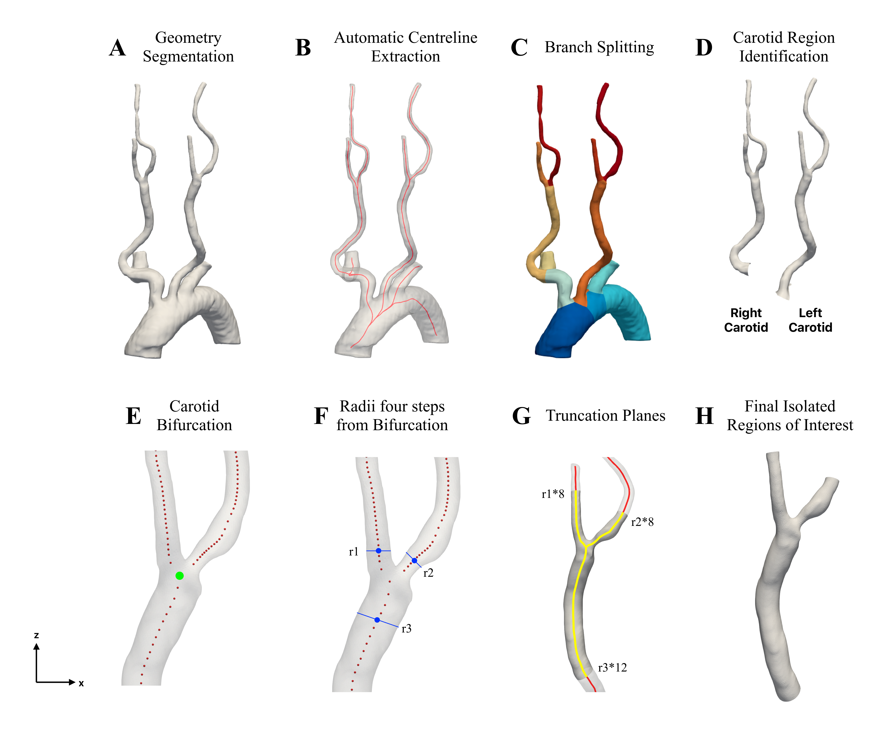
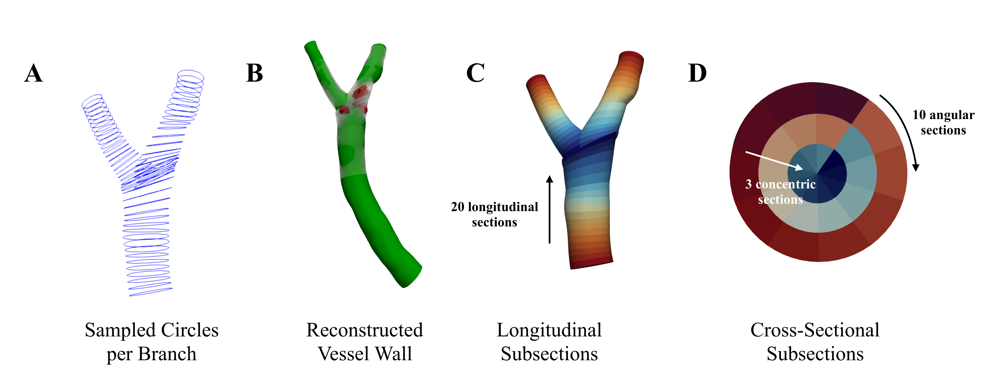
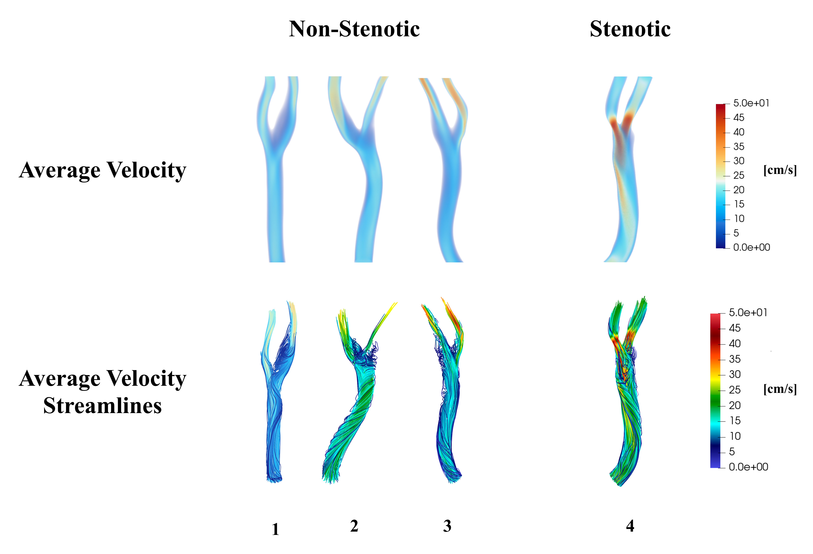

A Standardized Pipeline for Automated Carotid Artery Analysis
A fully automated pipeline that analyses CT scans of the carotid arteries and extracts a comprehensive set of measurements describing vessel shape, calcification, and blood flow enabling large-scale, standardized characterization in support of stroke risk research.
Background
Carotid stenosis is the narrowing of the carotid arteries, the major vessels on either side of the neck that supply blood to the brain, and is a leading cause of ischemic stroke. Current clinical assessment relies on simple diameter measurements and blood velocity readings, which are time-intensive, operator-dependent, and fail to capture the true complexity of the disease.
While individual aspects of carotid stenosis, such as vessel shape or calcification burden, have been studied, no comprehensive and automated approach exists that jointly characterizes vessel geometry, calcification, and blood flow in a single, standardized framework. This thesis addressed that gap.
Pipeline Overview
The pipeline takes CT angiography scans as input and automatically produces a structured dataset of measurements describing each patient's carotid arteries. It works through a series of independent stages from image segmentation through to blood flow simulation so that individual components can be updated or replaced without disrupting the rest of the workflow. The pipeline is open-source and designed to run on standard research hardware.
Geometry Processing & Region Extraction
Once the arteries were segmented, the pipeline automatically located the carotid bifurcation and extracted a standardized region from each patient's scan. This step is critical: by ensuring that the same anatomical region is analysed in every case, measurements become directly comparable across patients regardless of individual anatomical variation.

Spatial Calcification Characterization
To characterize not just the amount of calcification but its location, each vessel branch was divided into a three-dimensional grid of regions, capturing position along the vessel's length, depth within the wall, and position around the vessel's circumference. For each region, the proportion of the volume occupied by calcium was measured. This produced a spatial fingerprint of calcification that can be compared consistently across patients, going well beyond a simple total volume estimate.

Hemodynamic Simulation
The blood flow simulations were the most time-intensive part of the pipeline, taking between 25 minutes and 15 hours per case depending on the solver and hardware used. Each simulation produced detailed maps of blood velocity, pressure, and wall shear stress throughout the full cardiac cycle.
In healthy arteries, blood flows smoothly. In stenotic cases, where the artery is significantly narrowed, the simulations revealed a concentrated high-velocity jet through the narrowed region, followed by turbulent, recirculating flow downstream. This kind of disturbed flow is associated with elevated stroke risk and plaque instability.

Results
The pipeline was tested on 111 CT scans. Since each scan contains both a left and right carotid artery, this gave 222 individual vessels for analysis. Of these, 146 completed the full pipeline successfully, representing an overall success rate of 65.8%. Most failures were attributable to poor image quality in the original scans rather than errors in the pipeline itself.
The resulting dataset contains 354 measurements per patient spanning vessel shape, calcification, and blood flow. It serves as a foundation for future studies linking carotid anatomy and hemodynamics to clinical outcomes such as stroke, and its modular design allows individual components to be improved or extended independently.
Presented at the Harvard Surgery Research Day 2026.